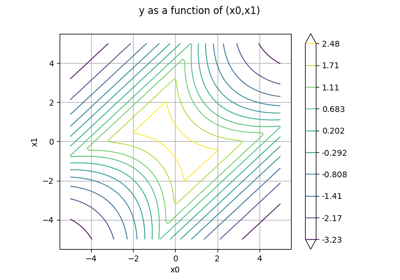
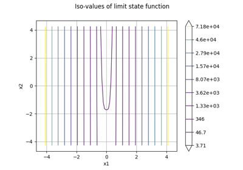
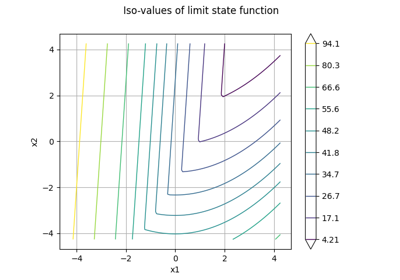
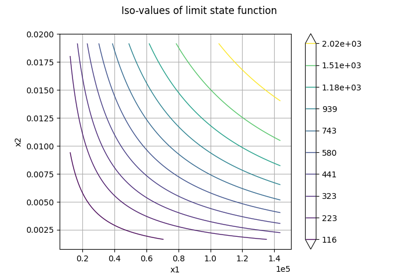
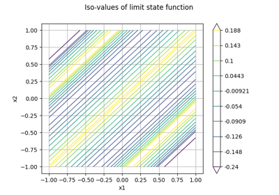
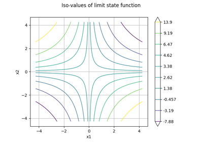

Reliability problems¶

Using the Waarts four-branch serial system
Using the Waarts four-branch serial system



RP31 analysis and 2D graphics



RP25 analysis and 2D graphics



RP28 analysis and 2D graphics

RP55 analysis and 2D graphics

RP75 analysis and 2D graphics